오늘은 같은 홈페이지를 두 가지 방법으로 만들어 비교합니다
방법 A는 코드에서 바로 만들고 다듬습니다. 방법 B는 디자인 도구로 배치를 먼저 그리고 코드로 옮깁니다. 마지막에 두 결과를 나란히 놓고 비교합니다.
학습 목표
오늘의 흐름
연습할 업종을 고르세요
수업은 빵집으로 함께 진행합니다. 다른 업종으로 해 보고 싶은 분이나 집에서 다시 연습할 때는 아래에서 고르세요. 고르면 모든 STEP의 프롬프트가 그 업종에 맞게 바뀝니다. 맨 위 "업종" 단추로도 바꿀 수 있습니다.
예시 · 바탕화면
시작 전에 확인
- 클로드 데스크톱 앱 로그인 (프로 요금제)
- 바탕화면에서 마우스 오른쪽 → 새로 만들기 → 폴더 → 이름 내홈페이지
- 오늘 만들 파일: 방법 A는 a.html, a2.html / 방법 B는 b.html
오늘 모델은 소넷으로 시작합니다
코드 탭 입력창 아래에서 모델을 소넷으로 고르고 시작하세요. 오퍼스는 사용량이 빨리 줄어서 수업 중간에 한도가 찰 수 있습니다.
꼭 바꿔야 할 때 쓰는 방법 세 가지
| 방법 | 어떻게 | 언제 좋은가 |
|---|---|---|
| ① 줄이고 바꾸기 | 입력창에 /compact를 넣어 대화를 요약한 뒤 모델을 바꿉니다. | 지금 세션을 이어 가고 싶을 때 |
| ② 인수인계 메모 | 메모를 남기고, 새 세션을 원하는 모델로 열어 메모를 읽힙니다. | 가장 깔끔함 · 오늘 권장 |
| ③ 처음부터 나눠 쓰기 | 모델 목록에 오퍼스 플랜(Opus Plan)이 보이면 고릅니다. 계획은 오퍼스가, 작업은 소넷이 나눠 합니다. | 앱 버전에 따라 없을 수 있음 |
② 바꾸기 전 · 지금 세션에서
② 바꾼 뒤 · 새 세션에서
방법 A · 코드에서 한 줄로 만들어 보기
일부러 짧게 시킵니다. 아무 정보 없이 시키면 AI가 어떤 홈페이지를 만드는지 먼저 보려는 것입니다.
① 위쪽 코드 탭
② 폴더 고르기 · ③ 신뢰
코드 탭 열고 폴더 연결하기
- 클로드 앱 위쪽에서 코드 탭을 누릅니다. 채팅 탭이 아닌지 꼭 확인하세요.
- 입력창 아래 폴더 선택에서 내 컴퓨터 → 바탕화면 내홈페이지를 고릅니다.
- "이 작업 공간을 신뢰합니까?"가 나오면 신뢰를 누릅니다.
- 모델을 소넷으로 고릅니다.
예시 · 빵집으로 실제 만들어 본 결과
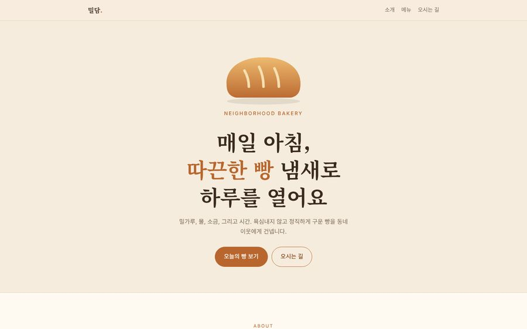
약 2분 걸렸습니다. 깔끔하지만 어딘가 익숙한 모습입니다.
한 줄만 넣어 보기
- 중간에 "허용할까요?"가 나오면 내용을 보고 허용을 누릅니다.
- 끝나면 내홈페이지 폴더에서 a.html을 더블클릭해 엽니다.
예시 · 휴대폰으로 본 첫 화면
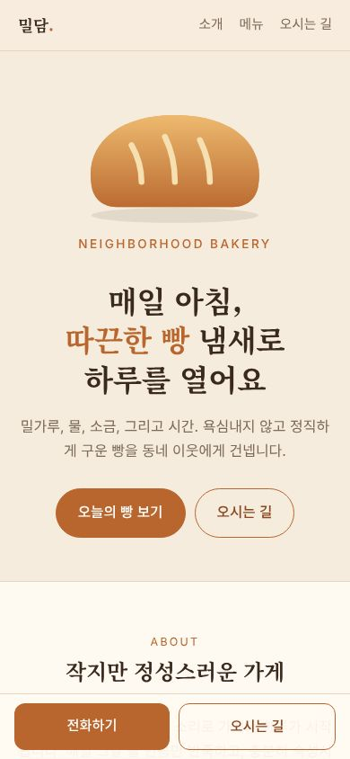
"AI 티" 다섯 가지 찾기
못생긴 게 아니라 "우리 가게 같지 않은 것"이 문제입니다. 내 결과에 보이는 것에 체크하세요.
- 크림색·베이지색 배경에 갈색 포인트
- 모든 것이 가운데 정렬된 첫 화면과 알약 모양 버튼 두 개
- 제목 위의 작은 영어 글씨 (ABOUT, MENU 같은 것)
- 사진 대신 이모지
- 제목에서 한 단어만 다른 색
- 입력했는데 파일이 안 생겨요
- 지난 시간에 가장 많았던 실수입니다. 채팅 탭에 입력한 경우예요. 코드 탭으로 옮겨 다시 보내세요.
- a.html이 어디 있는지 모르겠어요
- 폴더 연결이 다른 곳으로 된 경우입니다. 입력창 아래 폴더 이름이 내홈페이지인지 확인하세요.
- 더블클릭했더니 글자만 가득 나와요
- 메모장으로 열린 경우입니다. 마우스 오른쪽 → 연결 프로그램 → Chrome을 고르세요.
방법 A · 스킬을 넣고 구체적으로 다시 시키기
스킬은 실력을 올려 주는 설명서이고, 재료는 우리가 줘야 합니다. 둘을 함께 써야 "우리 가게다운" 홈페이지가 나옵니다.
스킬 = 클로드에게 넣어 주는 전문 설명서
오늘 쓰는 스킬은 앤트로픽(클로드를 만든 회사)이 공식으로 만든 frontend-design입니다. 프로그램이 아니라 설명서만 넣는 것이라 화면에 "Claude에 대한 지침만 추가함"이라고 나옵니다.
플러그인 = 스킬과 커넥터를 담는 상자
예전에는 스킬과 커넥터를 따로 찾아서 넣었는데, 지금은 클로드 앱의 플러그인 화면 한 곳에서 모두 추가합니다. 플러그인 화면 위쪽의 전체 · 커넥터 · Skills 탭으로 종류별로 볼 수 있습니다.
| 스킬 | 커넥터 | |
|---|---|---|
| 한 줄 뜻 | 일하는 방법을 알려 주는 설명서 | 내 앱과 자료에 들어가는 연결선 |
| 넣으면 | 같은 요청도 더 전문가답게 처리 | 드라이브·메일·캘린더 같은 내 자료를 읽고 씀 |
| 로그인 | 필요 없음 | 그 서비스 계정으로 연결(허락) 필요 |
| 오늘 쓰는 것 | frontend-design | 쓰지 않음 |
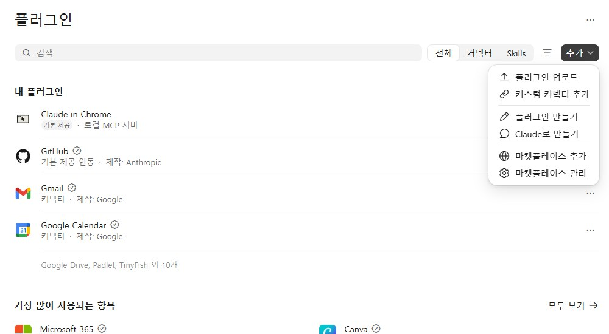
플러그인 화면. 위쪽 탭으로 커넥터와 스킬을 나눠 볼 수 있습니다.
frontend-design 스킬은 무엇을 시키나
앤트로픽이 만든 공식 스킬로, 클로드에게 "흔한 템플릿 말고 이 가게만의 디자인을 하라"고 가르치는 설명서입니다. 프로그램이 아니라 글로 된 지침이라 추가할 때 "Claude에 대한 지침만 추가함"이라고 나옵니다.
| 스킬이 시키는 것 | 뜻 |
|---|---|
| 주제에서 출발하기 | 빵집이면 빵집의 재료·말투·분위기에서 색과 글꼴을 고르게 함 |
| 흔한 AI 디자인 피하기 | 크림색 바탕, 제목 한 단어만 색 바꾸기, 영어 대문자 작은 제목 같은 "AI 티"를 피하게 함 |
| 먼저 계획, 그다음 만들기 | 색 4~6개, 글꼴, 배치를 먼저 정하고 "너무 뻔하지 않은가" 스스로 검토한 뒤 코드를 씀 |
| 힘줄 곳은 한 군데 | 눈에 띄는 요소는 하나만 두고 나머지는 차분하게 |
| 기본 품질 지키기 | 휴대폰에서도 보이게, 글줄은 너무 길지 않게, 키보드로도 쓸 수 있게 |
① 플러그인 화면에서 검색
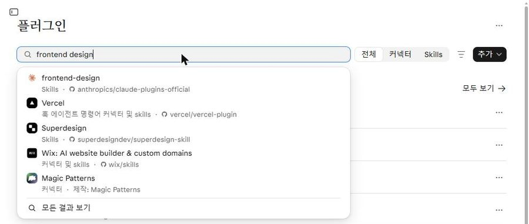
② 상세 화면 오른쪽 위 추가
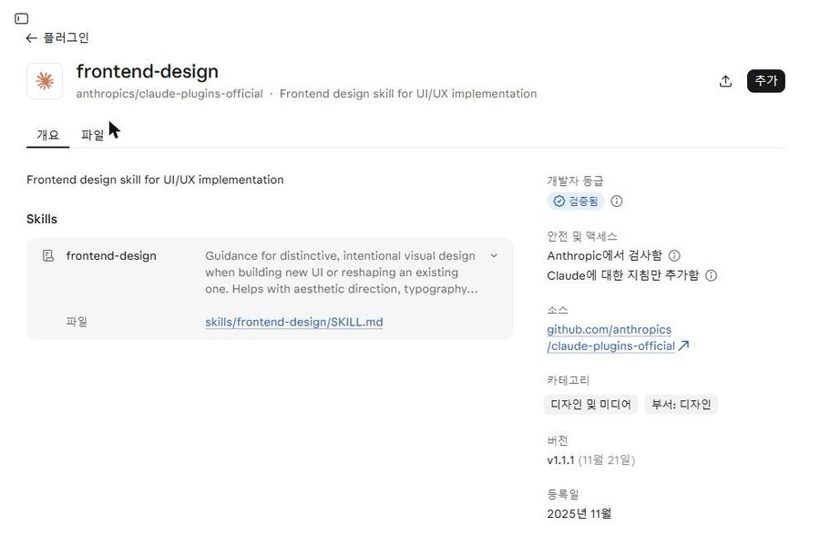
③ "추가됨"으로 바뀌면 끝
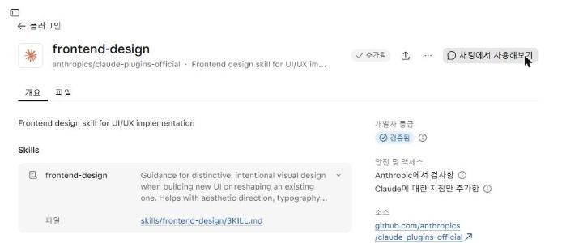
frontend-design 추가하기
- 클로드 앱에서 플러그인 화면을 엽니다. (웹이라면 claude.ai/plugins)
- 검색창에 아래 단어를 넣습니다.
- 맨 위 frontend-design을 누릅니다. 출처가 anthropics/claude-plugins-official인지 확인하세요.
- 오른쪽 위 추가를 누르고 추가됨으로 바뀌면 끝입니다.
스킬을 직접 불러오는 방법
새 세션에서 a.html부터 스킬로 검사받기
- 왼쪽 위 +로 새 세션을 엽니다. 스킬은 새 세션부터 적용됩니다. 폴더는 같은 내홈페이지, 모델은 소넷입니다.
- 입력창에 /를 치고 목록에서 frontend-design을 고릅니다.
- 한 칸 띄우고 아래 문장을 붙여 넣어 보냅니다.
결과 표에서 확인할 것
- 점수가 낮은 항목은 어디인가? (보통 "가게다운 느낌", "AI 티")
- STEP 1에서 내가 찾은 AI 티와 클로드가 짚은 것이 같은가?
- 이 점수표를 기억해 두세요. 아래에서 a2.html 점수와 비교합니다.
왜 새 세션에서 검사부터 하고, 왜 구체적으로 다시 시킬까
- 스킬은 새 세션부터 켜집니다. 스킬을 추가하기 전에 열린 세션은 그 설명서를 모르는 상태로 계속 일합니다.
- a.html을 만든 대화와 끊기 위해. 처음 만든 세션에서 이어 시키면 a.html을 조금만 고치려는 경향이 있습니다. 새 세션에서 스킬 기준으로 a.html을 남의 눈으로 검사하고, 그 약점을 피해 새로 만듭니다.
- 공정한 비교. "스킬 없음 + 한 줄"과 "스킬 + 구체적 요청"을 깨끗하게 나눠야 무엇이 달라졌는지 보입니다.
- 빈칸은 AI가 "가장 흔한 것"으로 채웁니다. 가게 이름·자랑거리·손님을 안 주면 어느 빵집에나 맞는 홈페이지가 나옵니다. STEP 1의 "우리 동네 빵집", "주소는 추후 안내"가 그 예입니다.
- 재료가 디자인을 정합니다. "새벽 4시 반죽", "출근하는 직장인" 같은 정보에서 첫 화면에 무엇을 크게 둘지, 어떤 분위기로 갈지가 나옵니다.
- "쓰지 말 것"은 확인표가 됩니다. 피할 것을 미리 적어 두면 클로드가 스스로 검사할 기준이 생깁니다.
| 프롬프트 항목 | 클로드가 이걸로 정하는 것 |
|---|---|
| 어떤 곳 | 규모와 분위기 (작은 동네 가게답게) |
| 우리 이야기 | 소개 문구와 첫 화면의 말투 |
| 대표 상품 | 첫 화면에서 가장 크게 보여 줄 것 |
| 주로 찾는 사람 | 글자 크기, 버튼 위치, 먼저 보여 줄 정보 |
| 들어갈 내용 | 아래로 이어질 순서 |
| 쓰지 말 것 | 피해야 할 흔한 디자인 (스스로 점검하는 기준) |
비교 · STEP 1과 지금
| STEP 1 | 지금 | |
|---|---|---|
| 가게 | 업종만 | |
| 자랑거리 | 없음 | |
| 손님 | 없음 | |
| 쓰지 말 것 | 없음 | AI 티 다섯 가지 |
| 스킬 | 없음 | frontend-design |
예시 · 왼쪽 a.html, 오른쪽 a2.html
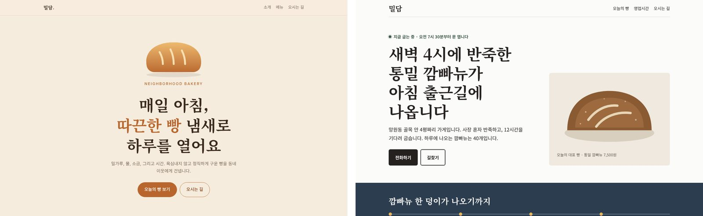
같은 빵집인데 가게 이야기와 대표 빵이 첫 화면에 들어왔습니다. 결과는 사람마다 다르게 나옵니다.
같은 세션에서 구체적으로 다시 시키기
- a.html을 검사받은 그 세션에 이어서 입력창에 / → frontend-design을 고릅니다.
- 한 칸 띄우고 아래 문장을 붙여 넣어 보냅니다. 클로드가 방금 짚은 a.html의 약점을 알고 있어서 더 잘 피합니다.
- 끝나면 a.html과 a2.html을 둘 다 열어 나란히 보고, AI 티 다섯 가지를 다시 체크합니다.
스킬이 쓰였는지 보는 곳
- /frontend-design으로 시작했다면 스킬을 쓴 것입니다.
- 클로드가 일하는 동안 대화창에 frontend-design을 불러왔다는 표시가 보이는지도 확인해 보세요.
a2.html도 같은 기준으로 검사받고 점수 비교하기
같은 세션에서 입력창에 / → frontend-design을 고르고 한 칸 띄운 뒤 붙여 넣습니다. 파일은 고치지 않고 점수와 이유만 받습니다.
결과 표를 보고 내 생각도 체크해 보세요.
- AI 티 다섯 가지가 a2.html에서 정말 줄었나?
- 클로드가 짚은 고칠 점에 나도 동의하나?
- 플러그인 화면을 못 찾겠어요
- 크롬에서 claude.ai/plugins로 들어가 추가해도 됩니다. 같은 계정이면 데스크톱 앱에도 적용됩니다.
- 추가했는데 결과가 그대로예요
- 추가하기 전에 열었던 세션에는 적용되지 않습니다. 새 세션을 열고 다시 보내세요.
- 그래도 AI 티가 남아 있어요
- 남은 것을 그대로 짚어 주세요. 예: "아직 첫 화면이 가운데 정렬이야. 왼쪽 정렬로 바꾸고 대표 상품을 크게 보여 줘."
휴대폰에서도 보이는 것과, 휴대폰을 위해 만든 것은 다릅니다
클로드는 기본적으로 반응형(화면 폭에 맞춰 알아서 줄어드는 방식)으로 만들어 줍니다. 그런데 반응형만으로는 손님이 원하는 것을 먼저 보여 주지 못합니다.
손님은 길에서, 휴대폰으로, 3초 안에 찾습니다
반응형은 "줄이기", 휴대폰 먼저는 "고르기"
| 반응형 (기본) | 휴대폰 먼저 (오늘 할 것) | |
|---|---|---|
| 출발점 | 컴퓨터 화면 | 휴대폰 화면 |
| 하는 일 | 폭에 맞춰 줄이고 한 줄로 쌓기 | 첫 화면에 무엇을 둘지 먼저 고르기 |
| 버튼 | 원래 자리 그대로, 아래로 밀릴 수 있음 | 엄지가 닿는 아래쪽에 고정 |
| 누가 정하나 | AI가 알아서 | 내가 프롬프트로 정해 줌 |
휴대폰에서 시작해서 PC로 넓힙니다
휴대폰 먼저는 휴대폰만 하자는 뜻이 아닙니다. 무엇이 중요한지를 휴대폰에서 먼저 정하고, 넓은 화면에서는 그 순서를 지키면서 나란히 펼칩니다. STEP 5 마지막에 직접 넓혀 봅니다.
방법 B · 디자인 먼저, 휴대폰 와이어프레임부터
이번에는 순서를 바꿉니다. 코드보다 먼저 와이어프레임(집 설계도처럼 어디에 무엇이 들어갈지만 선과 상자로 그린 것)을 휴대폰 화면 기준으로 그립니다.
와이어프레임 → 시안 → 홈페이지
오늘은 배치는 클로드 디자인이 잡고, 색과 꾸밈은 코드와 스킬이 맡습니다. 색이 없으니 "휴대폰 첫 화면에 무엇을 둘까"에만 집중할 수 있습니다.
① 프롬프트를 넣고 모델을 Sonnet 5.5로
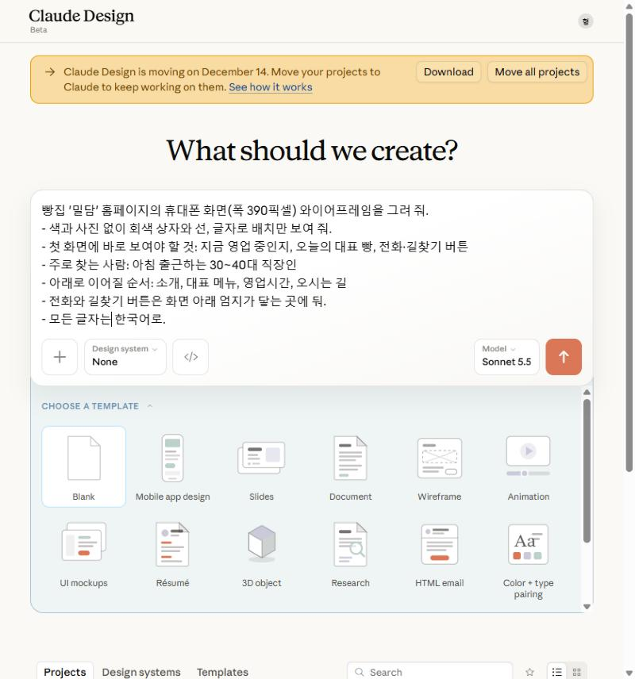
② 결과 예시 · 휴대폰 와이어프레임 (약 30초)
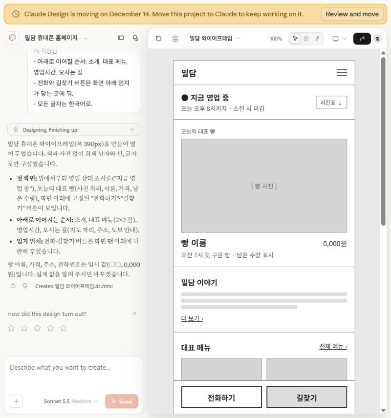
휴대폰 와이어프레임 그리기
- 클로드 앱 왼쪽 메뉴에서 디자인을 엽니다. 안 보이면 크롬에서 claude.ai/design으로 들어갑니다.
- 입력창 오른쪽 아래 Model을 눌러 Sonnet 5.5로 바꿉니다. 처음에는 오퍼스로 되어 있어 사용량이 많이 듭니다.
- 아래 문장을 붙여 넣고 오른쪽 화살표로 보냅니다. 템플릿은 고르지 않아도 됩니다.
예시 · 그림을 붙여 넣은 입력창
와이어프레임 캡처하기
오늘 쓰는 방법 · 캡처해서 붙여 넣기
- 와이어프레임이 보이는 상태에서 Windows+Shift+S → 휴대폰 화면 부분만 끌어서 고릅니다.
- STEP 5에서 코드 입력창에 프롬프트를 붙이기 전에 Ctrl+V로 그림을 먼저 붙여 넣습니다.
- 디자인 메뉴가 안 보여요
- 크롬에서 claude.ai/design으로 들어가세요. 그래도 안 되면 스티치로 바로 바꿉니다.
- 색까지 칠한 시안이 나왔어요
- 괜찮습니다. 배치만 참고하면 됩니다. 다음부터는 "색과 사진 없이 회색 상자만"을 꼭 넣으세요.
- 사용량 경고가 떴어요
- 여기서 멈추고 선생님 화면의 와이어프레임을 캡처해서 쓰세요. STEP 5에 사용량을 남겨 두는 것이 중요합니다.
방법 B · 와이어프레임을 코드로 옮기고 PC로 넓히기
배치는 와이어프레임대로 지키고, 색과 꾸밈은 스킬을 켠 코드가 입힙니다. 마지막에 넓은 화면까지 맞춥니다.
결과 예시 · 휴대폰 화면
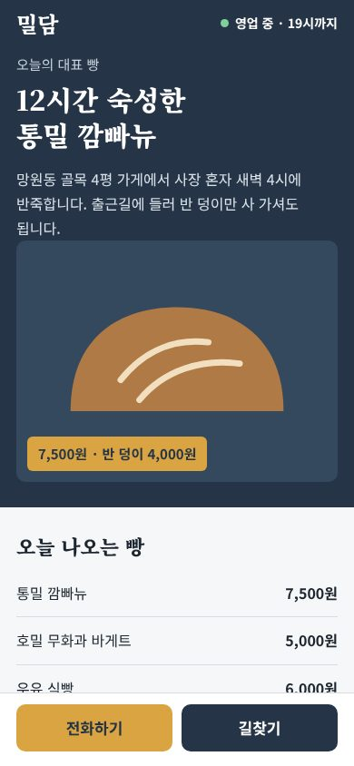
와이어프레임의 배치가 그대로 지켜졌는지 비교해 보세요.
와이어프레임대로 만들기
- 새 세션을 엽니다. 폴더는 내홈페이지, 모델은 소넷입니다.
- 입력창에 STEP 4에서 캡처한 와이어프레임을 Ctrl+V로 먼저 붙여 넣습니다. 입력창에 작은 그림이 보이면 됩니다.
- 그 뒤에 아래 문장을 붙여 넣고 보냅니다.
예시 · 크롬 창을 좁게 줄이기
휴대폰 폭으로 직접 보기
- 크롬으로 b.html을 엽니다.
- 창 오른쪽 위 창 모드(최대화 해제)를 누르고, 창 오른쪽 끝을 왼쪽으로 끌어 좁힙니다.
- 첫 화면에서 이것이 바로 보이는지 확인합니다:
결과 예시 · PC 화면
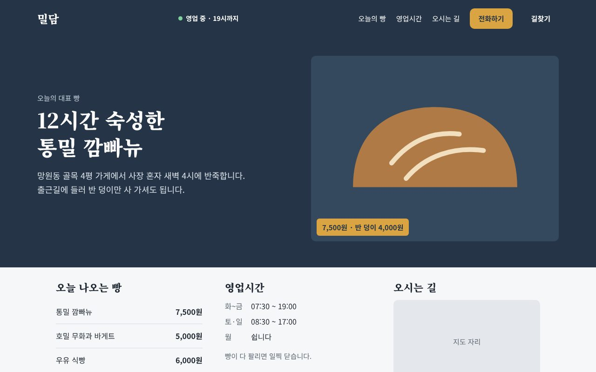
아래에 있던 전화·길찾기 버튼이 위쪽 메뉴로 올라갔습니다.
넓은 화면에서도 잘 보이게
같은 세션에 이어서 보냅니다.
- 와이어프레임과 배치가 달라요
- "와이어프레임의 순서와 크기를 그대로 지켜 줘. 위에서부터 ○○, ○○ 순서야."처럼 다른 부분을 짚어 주세요.
- 휴대폰 화면이 PC 작업 뒤에 망가졌어요
- "휴대폰 폭 390픽셀 화면은 아까 상태로 되돌려 줘"라고 보내세요.
- 고쳤다는데 화면이 그대로예요
- 크롬에서 F5(새로고침)를 누르세요. 그래도 같으면 탭을 닫고 파일을 다시 더블클릭합니다.
- 버튼이 넓은 화면에서도 아래에 떠 있어요
- "넓은 화면에서는 아래 고정 버튼을 숨기고 위쪽 메뉴에 넣어 줘"라고 보내세요.
A와 B를 나란히 놓고, 왜 코드인지 정리하기
같은 가게를 두 방법으로 만들었습니다. 어떤 방법이 언제 좋은지, 그리고 왜 채팅창이 아니라 코드에서 했는지 정리합니다.
두 방법 한눈에
| A 코드 먼저 | B 디자인 먼저 | |
|---|---|---|
| 출발 | 코드에 바로 시키기 | 휴대폰 와이어프레임 |
| 잘 맞을 때 | 원하는 모습이 머릿속에 있을 때, 빨리 볼 때 | 무엇을 먼저 보여 줄지 정해야 할 때 |
| 좋은 점 | 빠름, 도구 하나 | 배치를 내가 정함, 휴대폰에 강함 |
| 아쉬운 점 | 배치를 AI가 정함 | 단계가 하나 더, 사용량이 더 듦 |
클로드에게 비교를 맡겨 보기
새 세션(폴더 내홈페이지)에 보냅니다. 코드는 직접 열어서 비교할 수 있습니다.
결과를 보며 내 생각도 체크해 보세요.
- 첫 화면에서 손님이 원하는 것을 더 빨리 찾는 쪽은?
- "우리 가게 같다"는 느낌이 더 나는 쪽은?
- 다음에 내 홈페이지를 만든다면 어느 방법으로?
채팅창도 홈페이지는 만듭니다. 코드는 스스로 열어 보고 고칩니다
오늘 프롬프트 끝에 계속 넣은 "다 만들면 휴대폰 폭으로 열어서 확인해 줘"가 바로 코드에서만 되는 일입니다. 채팅창은 만들어 보여 주는 데서 끝나지만, 코드는 내 컴퓨터에서 직접 열어 보고, 검사하고, 고칩니다.
다음 시간에는 진짜 인터넷 주소를 만듭니다
- 깃허브(인터넷 보관 상자): 오늘 스킬을 가져온 그 창고에 내 홈페이지도 보관합니다.
- 버셀(내 주소): 홈페이지에 진짜 인터넷 주소가 생기고, 고치면 자동으로 반영됩니다.
- 내홈페이지 폴더를 그대로 가져오세요. 오늘 고른 a2.html 또는 b.html이 출발점입니다.